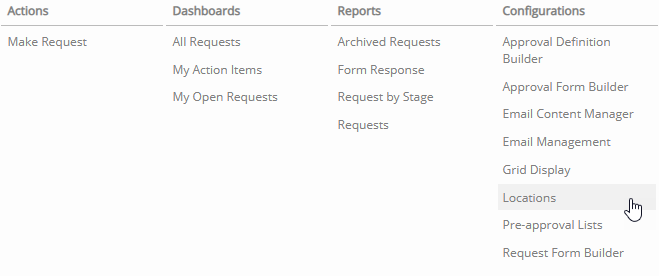
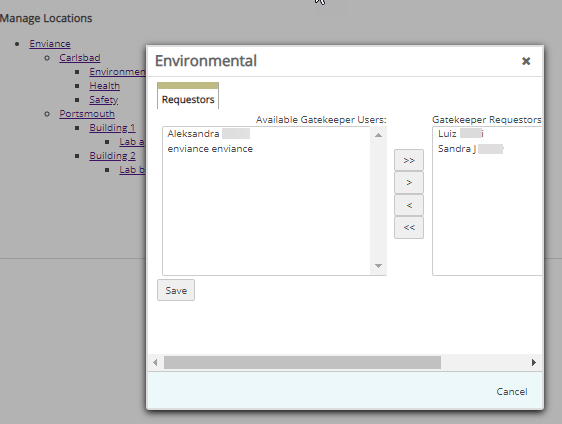

In Locations, you authorize users to make Gatekeeper requests.
To assign requestors to locations:
Click Gatekeeper Main Menu (). The Gatekeeper navigation pane displays. Select Locations from the Configurations list.

The Manage Locations page displays.
Select a location from the Location hierarchy.
The pop-up window displays the available Gatekeeper users.

Select a user from the available users on the left. Use CRTL+click to select multiple users. Click the right arrow to move the user to the list of Gatekeeper Requestors. Use the double-right arrow to move all the users.
Click Save.
Note: After configuring the requestors for your locations, you can manage email reminders and email content, as necessary. Optionally, you can create preapproval lists for products that bypass the normal approval process.
 ). The Gatekeeper navigation pane displays. Select Locations from the Configurations list.
). The Gatekeeper navigation pane displays. Select Locations from the Configurations list.